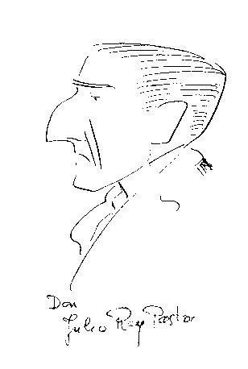

Problema 100
Dado un lado
l, la altura correspondiente h y el radio de la circunferencia inscrita,
r, construir el triángulo. |
Rey Pastor, J. (1905): Revista Trimestral de Matemáticas. Zaragoza. (Tomo V. p. 239)
(El editor agradece a Natividad Gómez Pérez, Directora de la Biblioteca de Matemáticas de la Universidad de Sevilla la obtención del documento que se encuentra en la Universitat Politecnica de Catalunya.)

D. Julio Rey Pastor caricaturizado por D. Pedro Puig Adam.
Tomada de la web de Francisco Martín Casalderrey
(Sociedad Madrileña de Profesores de Matemáticas "Emma Castelnuovo")